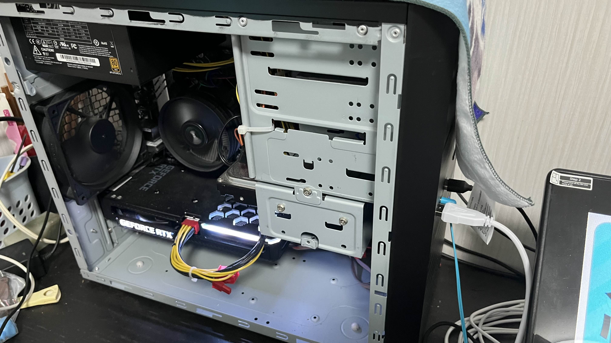
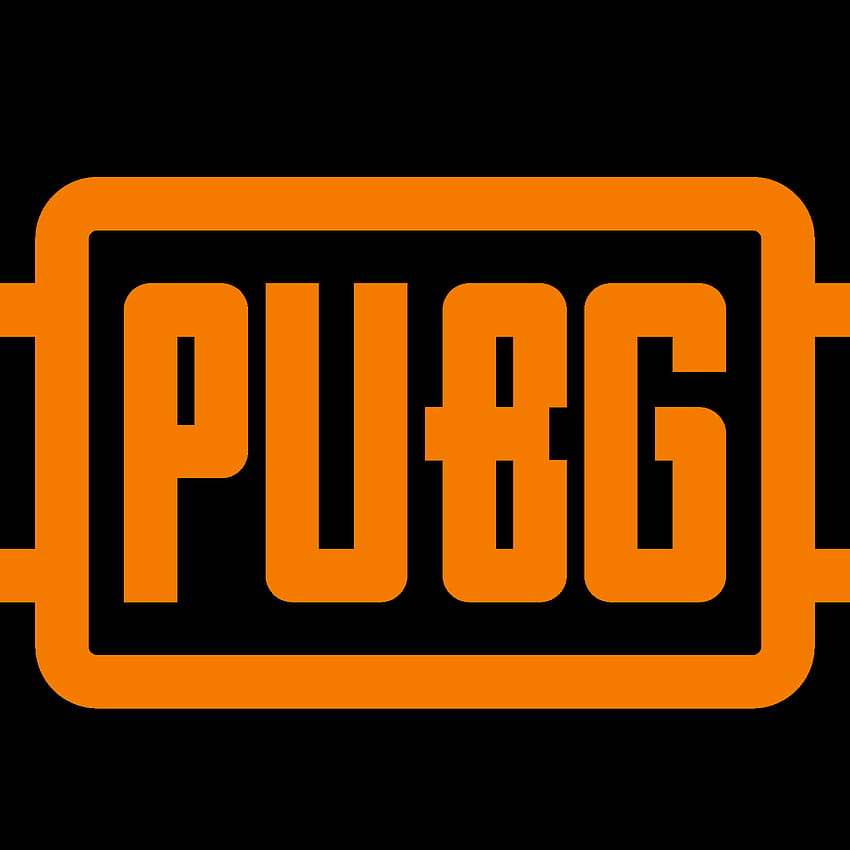
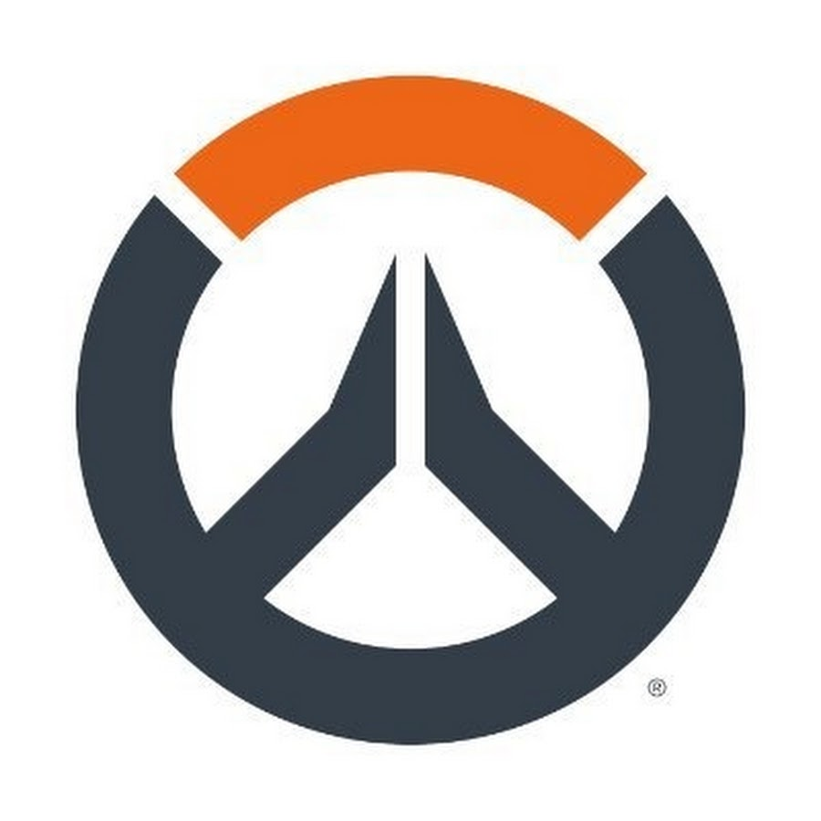
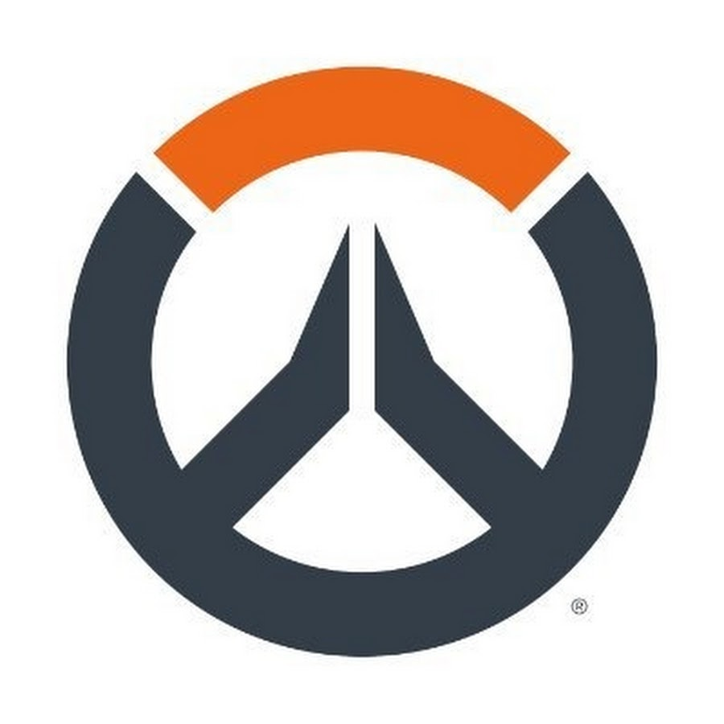
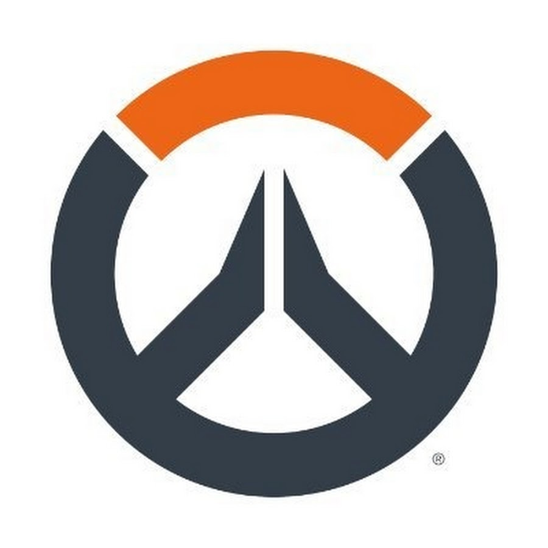

自己紹介書
金沢工業大学 情報フロンティア学部メディア情報科 中村亮太
- 趣味・特技
- PCゲーム(主にFPS)
PUBGやOW2などに触れてきた 最近はValorantに熱中 - PCパーツ調べ
以前からゲーミングPCに興味がある
現在所持しているゲーミングPCではデザイン的に納得がいっていない
アルバイトでこれまでの知識と経験が活きている - プログラミング
授業で触れたことなどをきっかけに個人的にゲーム制作をした
GithubやGCPなどのツールに興味を持ち、ある程度慣れている - 志望動機
- 学んできたことを活かせる仕事・ワークライフバランスが充実している企業で働きたいと考え、IT業界を調べていた
会社説明会では「頑張りたい人が頑張れる組織」や、実際に運用されている防災システムや製品が自身のスキルアップや社会貢献になると思い選考に進んだ
先日の面接で研修制度の充実さや先輩社員の方々からのサポートが手厚いことなどを聞き、長期的に成長・活躍ができそうだと感じ、御社で働きたいという気持ちが強くなった
- 学校で力を入れてきたこと
- 卒業研究
映像と音で楽しむVRコンテンツに対して、再生されている映像や音に合わせた風や水などの物理的な刺激を被験者に与えることによる没入感・リアリティの向上
度合いを検証する研究 - 学校外で力を入れてきたこと
- アルバイト
大学入学後、自動車免許取得のためにスーパーでのレジバイトを2年経験し、その後から現在までリユースショップに勤めている
リユースショップではPCの買取もあるため、これまでの経験を活かして日々買取・品出し業務に従事している
ゲーミングPCの買取が多い時期があり、集客のためにゲーミングPCの展示を提案・実行した

 

